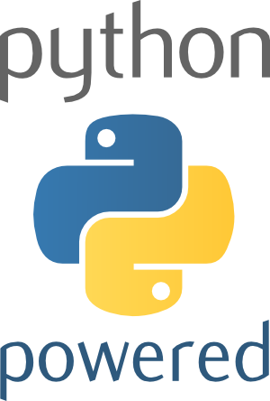
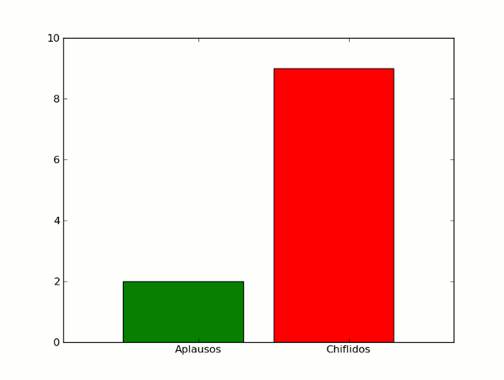

Python ❤ Ingeniería (Parte 2)


Antes de empezar
Daremos un repaso rápido
Pueden ejecutar sus módulos directamente en ipython con
%run (modulo)
Recuerden que es taller
- hay que programar
- hay que preguntar
- hay que ayudarse con los compañeros
Paso a paso (repaso) 1/8
Números:
a = 18 ** 2.4 / 2.0 b = 3e-5 + 1j * j
Conversiones y redondeos:
result = int(0xFF) * int('1101', 2) - round(3.4566, 2)Operaciones aritméticas:
+ - * / % **
Operaciones a nivel bit:
| & ~ ^
Operaciones lógicas:
and or not in is == != < >
Paso a paso (repaso) 2/8
Cadenas:
una_cadena = 'apostrofes' + "comilla's" + """triples comillas""" expandibles = "%s está de %i" % ('Python', 10)Listas (contenedor mutable):
a = [1, 'hola', UnObjeto(), [] ] a[0] #devuelve 1 a[0:2] # [1, 'hola'] a[-1] = 3 #cambia el ultimo elemento por 3 lista_x_comprension = [i, i**2 for i in range(-5, 5)]
Tuplas (contenedor inmutable):
b = (0, 3, 'hola') b[1] #es 3 b[1] = 'no me deja' #se acuerdan por qué era?
Paso a paso (repaso) 3/8
Conjuntos (elementos únicos):
set_1 = set(range(5)) set_2 = set(range(-2, 3)) set_1.intersection ( set_2 ) # set([0, 1, 2])
Diccionarios (mapas clave->valor):
semana_lab = {1:'lunes', 2:'martes', 3:'miercoles', 4:'jueves', 5: 'viernes'} semana.values() # no necesariamente ordenados
Paso a paso (repaso) 4/8
Control de flujo
Si tal cosa ...
if condicion1 :
#ejecuta si
# condicion1 == True
pass
elif condicion2:
#ejecuta si condicion1 == False
# y condicion2 == True
pass
else:
#ejecuta si no se ejecuto
#nada antes
pass
Paso a paso (repaso) 5/8
Control de flujo
Para cada cosa ...
for a in iterable:
pass
break #sale
continue #salta a inicio
else:
#opcional. se ejecuta
#si no hubo un break
pass
Paso a paso (repaso) 6/8
Control de flujo
Mientras tal cosa ...
while condicion:
#ejecuta mientra condicion == True
break #sale
continue #salta al inicio
Paso a paso (repaso) 7/8
Funciones:
def pedir_confirmacion(prompt, reintentos=4,
queja='Si o no, por favor!'):
while True:
ok = raw_input(prompt)
if ok in ('s', 'S', 'si', 'Si', 'SI'):
return True
if ok in ('n', 'no', 'No', 'NO'):
return False
reintentos = reintentos - 1
if reintentos < 0:
raise IOError('usuario duro')
print queja
Archivos:
fh = open('archivo.txt', 'r')
for line in fh.readlines():
pass
Paso a paso (repaso) 8/8
class Actor:
"""Actor con filmografía"""
def __init__(self, nombre):
self.nombre = nombre
self.filmografia = []
def actuar (self, pelicula)
self.filmografia.append(pelicula)
def actuo_en (self, pelicula)
return (pelicula in self.fimografia)
def actuo_con (self, actor):
for pelicula in self.filmografia:
if actor.actuo_en(pelicula):
return True
return False
a = Actor('Hugo Weaving')
a.actuar ('Babe')
a.actuar ('Matrix')
if a.actuo_con (k): ...
FIN DEL REPASO
- Ahora subamos escalones
Veremos:
- algo de numpy y matplotlib
- algunas de las baterias incluídas!
Aleatoriedad
Todo lo que tiene que ver con aleatoridad (números, muestras, mezclas, distribuciones... ) está en el módulo random
import random alazar = random.randint(1, 100) #entero alumnos = ['Miguel', 'Renzo', 'Orlando', 'Pancho', 'Toni'] paga_el_cafe = random.choice(alumnos) promocionan = random.sample(alumnos, len(alumnos)/2 ) normal = [random.gauss(0, .5) for i in range(100)]
Matemática
Funciones y constantes matemáticas:
import math x = [i * 0.1 for i in range(0, math.pi * 10)] #que feo! y = [math.sin(i) for i in x] print "máximo: ', x[ y.index( max(y) ) ], max(y)
También cmath, fraction, decimal, y + !
Numpy (extensión)
Vieron que x era feo ? Por eso existe Numpy
- Las listas son ineficientes para vectores/matrices grandes
- range (o xrange) no soportan pasos de punto flotante
- Operar casi siempre iterando, aunque sea fácil, es molesto.
- Numpy trae verdaderos y eficientes arrays a Python
- Muchas funciones incorporadas. Muchas más en scipy
- Muy parecido a Matlab
Ejemplo
import numpy as np x = np.arange(0, 2*np.pi, .1) y = x ** 2 #broadcast y vectorización (iteración implicita) a = np.identity(5) #matriz identidad 5x5 print a.diagonal() a_fft = np.fft.ftt (a) #transformada rápida de fourier
Matplotlib (extensión)
- No hay ingenieria sin gráficos
- 2d y 3d: cartesianos, polares, histogramas, scatter, y más!
- Te debo mi título Matplotlib
import numpy as np, random
from matplotlib import pylab
x = np.arange(0, 2*np.pi, .1)
pylab.subplot(211)
pylab.plot(x, np.sin(x), 'b',
label='Seno')
pylab.plot(x, np.cos(x), 'g-',
label='Coseno')
pylab.legend()
pylab.subplot(212)
normal = np.random.normal(size = 500)
pylab.hist(normal)
pylab.show()
Serializacion/persistencia
Serializar objetos (para persistencia o enviar por red, por ejemplo):
import pickle
mi_objeto = {1:'cualquier', 2:Cosa(), 'que_sea':"'Pickeable'" }
fh = open('backup_objeto.txt', 'w')
pickle.dump(mi_objeto, fh)
#para recuperar
mi_objeto = pickle.load( open('backup_objeto.txt', 'r') )
Parsear CSV
Lee/escribe archivos separados por coma:
#Martin, neuquen, 10
#Miguel, córdoba, 30
#Renzo, córdoba, 56
iter = csv.reader(open('data.csv'))
for dato in iter:
print "%s es de %s" % (i[0], i[i].strip().capitalize() )
Expresiones regulares
Patrones de cadenas
Altamente eficientes para hacer reemplazos o búsqueda complejas
Típicas en Perl
Llamen a un lingüista:
import re def camel_to_under(name): s1 = re.sub('(.)([A-Z][a-z]+)', r'\1_\2', name) return re.sub('([a-z0-9])([A-Z])', r'\1_\2', s1).lower() print camel_to_under('CamelCase')
Subprocesos
Ejecutar otros procesos desde el proceso actual:
import subprocess retcode = subprocess.call(["ls", "-l"])
Multiplataforma
Permite hacer pipes, capturar stdout, etc...
Hilos
Simil Java: bajo nivel (Thread) y alto nivel (Threading)
Locks (simples y reentrantes), semáforos, temporizadores, conditions, events, etc:
from threading import Thread class Hilo(Thread): def __init__(self, id): threading.Thread.__init__(self) self.id = id def run(self): for i in range(10): print "Soy %s en mi %i iteracion" % (self.id,i + 1) hilos = [Hilo(i + 1) for i in range(5)] for h in hilos: h.start()
Multiprocesos
(un poco) más caros, pero menos problemas de concurrencia
- Multiples procesos se encargan de la ejecución
- Mucho para hacer lo mismo, o cada uno hace algo particular
- Respeta la interfaz de Thread , no hay diferencia en código.
- Comunicación e/procesos mediante colas, pipes (o memoria compartida)
from multiprocessing import Pool
def f(x): return x*x
if __name__ == '__main__':
pool = Pool(processes=4) # start 4 worker processes
result = pool.apply_async(f, [10]) # evaluate "f(10)" asynchronously
print result.get(timeout=1) # "100" unless your computer is *very* slow
print pool.map(f, range(100)) # prints "[0, 1, 4,..., 81]"
Sockets y red
Bloqueantes y no bloqueantes
Bajo y alto nivel
Ejemplo: Eco eco eco ...
import socket HOST, PORT = '', 50007 s = socket.socket(socket.AF_INET, socket.SOCK_STREAM) s.bind((HOST, PORT)) s.listen(1) conn, addr = s.accept() print 'Connected by', addr while 1: data = conn.recv(1024) if not data: break conn.send(data) conn.close()
Intefaz con C: ctypes
Interfacear C y Python no puede ser más fácil!
- Lo que está en C no requiere saber que se usará en Python (JNI si)
- Funciones de conversión de tipos de datos incorporados
//código C
int multiply(int num1, int num2) {
return num1 * num2;
}
Compilamos:
gcc -c -fPIC libtest.c gcc -shared libtest.o -o libtest.so
y usamos!
from ctypes import * import os libtest = cdll.LoadLibrary(os.getcwd() + '/libtest.so') print libtest.multiply(2, 2)
Pruebas unitarias
Las pruebas unitaria son test automáticos
- Sabemos qué debe hacer el programa
- Garanticemos que lo haga
- Mejor, que lo garantice el propio programa
import unittest, random
class TestSequenceFunctions(unittest.TestCase):
def setUp(self):
self.seq = range(10)
def test_shuffle(self):
# make sure the shuffled sequence does not lose any elements
random.shuffle(self.seq)
self.seq.sort()
self.assertEqual(self.seq, range(10))
# should raise an exception for an immutable sequence
self.assertRaises(TypeError, random.shuffle, (1,2,3))
def test_choice(self):
element = random.choice(self.seq)
self.assertTrue(element in self.seq)
def test_sample(self):
with self.assertRaises(ValueError):
random.sample(self.seq, 20)
for element in random.sample(self.seq, 5):
self.assertTrue(element in self.seq)
if __name__ == '__main__':
unittest.main()
Mucho por hoy
Nos vemos!
